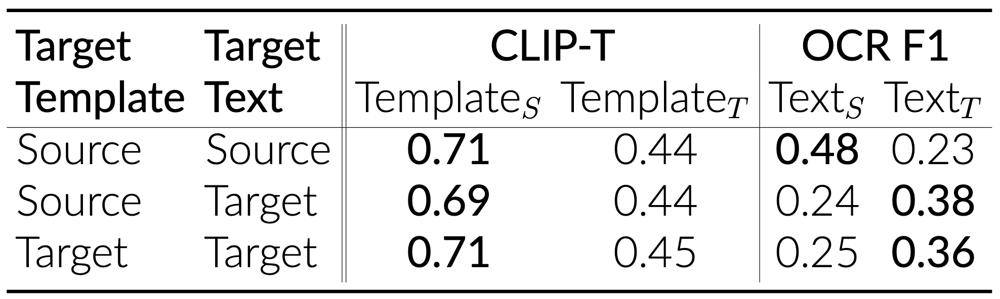

Novel diffusion models can synthesize photo-realistic images with integrated high-quality text. Surprisingly, we demonstrate through attention activation patching that only less than 1% of diffusion models' parameters, all contained in attention layers, influence the generation of textual content within the images. Building on this observation, we improve textual generation efficiency and performance by targeting cross and joint attention layers of diffusion models. We introduce several applications that benefit from localizing the layers responsible for textual content generation. We first show that a LoRA-based fine-tuning solely of the localized layers enhances, even more, the general text-generation capabilities of large diffusion models while preserving the quality and diversity of the diffusion models' generations. Then, we demonstrate how we can use the localized layers to edit textual content in generated images. Finally, we extend this idea to the practical use case of preventing the generation of toxic text in a cost-free manner. In contrast to prior work, our localization approach is broadly applicable across various diffusion model architectures, including U-Net (e.g., LDM and SDXL) and transformer-based (e.g., DeepFloyd IF and Stable Diffusion 3), utilizing diverse text encoders (e.g., from CLIP to the large language models like T5).
Building on recent works that show how altering key and value matrices in cross-attention layers can control concept generation in diffusion models, we identify which attention layers generate textual content.
Injection modifies key and value matrices in cross-attention layers to influence concept generation in U-Net-based diffusion models like Stable Diffusion. It simply replaces the text embeddings that are the input to the cross-attention layer with the embeddings of the target prompt. However, it is ineffective for models with joint attention, such as SD3 and FLUX, where text embeddings evolve across layers.
Patching identifies attention layers by caching and injecting activations from a target prompt during another generation. By modifying only text-related activations, patching remains effective across different model architectures.
Using our localization approaches, we identified three layers in SDXL (55, 56, and 57), one layer in DeepFloyd IF (17), and one layer in SD3 (10). These layers, when patched, cause the diffusion models to produce the text that closely matches the text in the target prompt. Most notably, this constitutes to less than 1% of the total model parameters.
We investigate the information extracted from the prompt by selected layers and its effect on generation. To this end, we use different combinations of templates and keyword texts as the target prompt and measure their impact on the diffusion model’s output. We find that the background consistently aligns with the source prompt, while text alignment varies based on the target prompt. This suggests that the localized layers focus specifically on the text component of the prompt.
We demonstrate that using LoRA-based fine-tuning specifically on the localized layers significantly improves the general text-generation abilities of diffusion models. This enhancement is achieved without compromising the quality and diversity of outputs produced by the diffusion models. By focusing on localized layers, we only need to fine-tune about 1% of the model parameters, making our approach both computationally and memory-efficient.
We can use the localized layers to edit textual content in generated images, where the goal is to change the text in the generated image to a new text, while keeping the rest of the image unchanged. Our method works across diverse model archtectures, leveraging different text encoders.
We observe that diffusion models, even the ones equipped with safeguards against generating NSFW (Not Safe For Work) content, tend to simply copy-paste the text from the prompt to the image. As a result, while the visual content may be safe thanks to careful filtering of the fine-tuning dataset, the text in the generated images can still be harmful.
We apply our edition technique to prevent the generation of toxic text within images. Our goal is to address scenarios where a model provider exposes a diffusion model for generating images from textual prompts.
@inproceedings{
staniszewski2025precise,
title={Precise Parameter Localization for Textual Generation in Diffusion Models},
author={{\L}ukasz Staniszewski and Bartosz Cywi{\'n}ski and Franziska Boenisch and Kamil Deja and Adam Dziedzic},
booktitle={The Thirteenth International Conference on Learning Representations},
year={2025},
url={https://openreview.net/forum?id=gdHtZlaaSo}
}